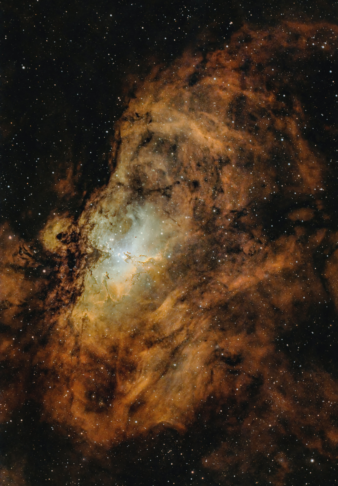

<!-- 
    
    Praticando 

Coloque uma imagem na sua pagina 
Adicione um texto alternativo, caso a imagem não apareça
Adicione um titulo , para quando o mouse descansar em cima 
Adicione uma largura de 500px
Depois remova e adicione a altura de 50px
Experimente fazer modificações
Por fim adicione um link de redirecionamento ao clicar na imagem -->

<a href="https://www.google.com.br">

</a>